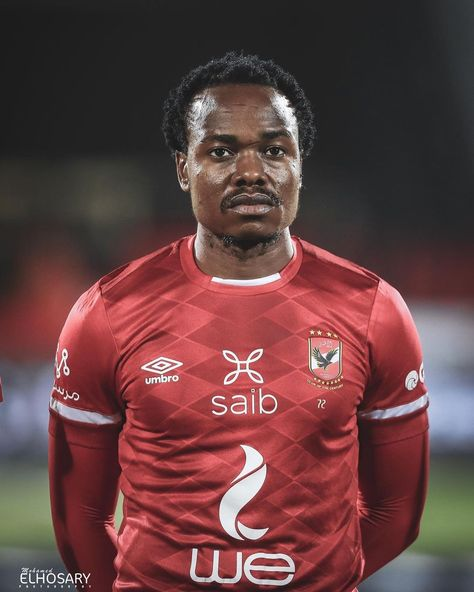

Sfiso Hlanti
Date of birth/Age: 05.01.1990 (35)
Place of birth: South Africa Durban,KZN
Citizenship: South Africa South Africa
Height: 1,81 m
Position: Left-Back
Former International: South AfricaSouth Africa
Caps/Goals: 25 / 0

Themba Zwane
Date of birth/Age: 03.08.1989 (36)
Place of birth: South Africa Tembisa, Gauteng
Citizenship: South Africa South Africa
Height: 1,70 m
Position: Attacking Midfield
National player: South AfricaSouth Africa
Caps/Goals: 47 / 12

Ronwen Williams
Date of birth/Age: 21.01.1992 (33)
Place of birth: South Africa Port Elizabeth
Citizenship: South Africa
Height: 1,84 m
Position: Goalkeeper
National player: South Africa
Caps/Goals: 46 / 0
.jpeg)
Keagan Dolly
Date of birth/Age: 22.01.1993 (32)
Place of birth: South Africa Westbury, Gauteng
Citizenship: South Africa South Africa
Height: 1,70 m
Position: Left Winger
Current international: South AfricaSouth Africa
Caps/Goals: 22 / 3

Percy Tau
Date of birth/Age: 13.05.1994 (31)
Place of birth: South Africa Witbank, Mpumalanga
Citizenship: South Africa South Africa
Height: 1,75 m
Position: Right Winger
National player: South Africa
Caps/Goals: 46 / 15

Thembinkosi Lorch
Date of birth/Age: 22.07.1993 (32)
Place of birth: South Africa Bloemfontein, Free State
Citizenship: South Africa South Africa
Height: 1,68 m
Position: Left Winger
Former International: South AfricaSouth Africa
Caps/Goals: 9 / 1